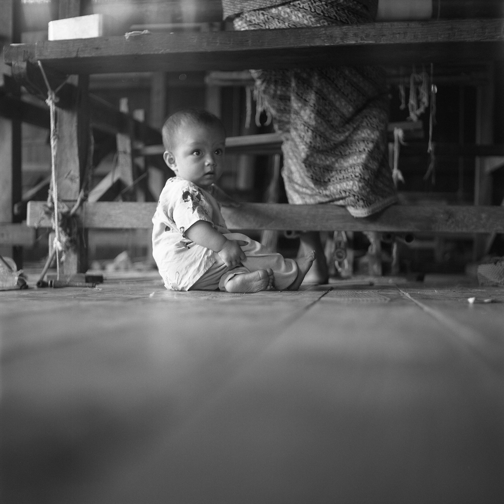
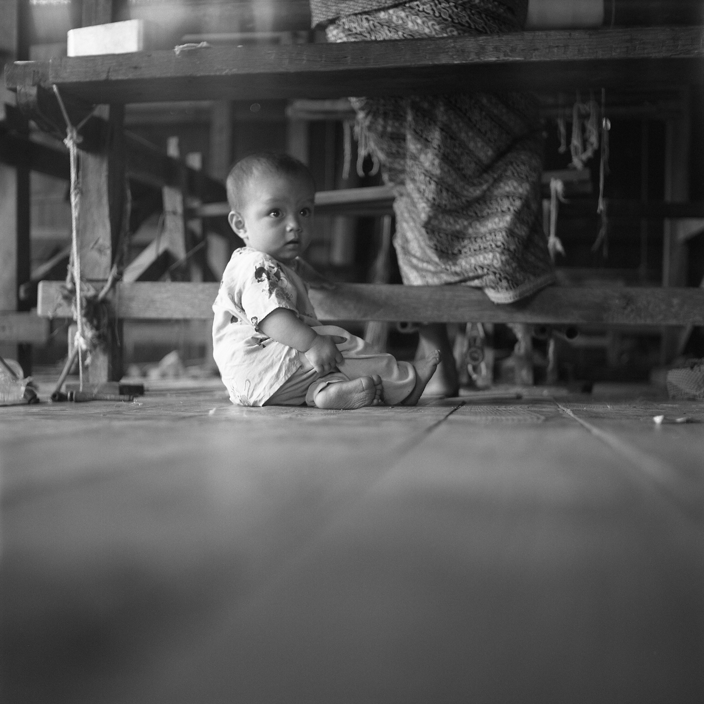

Myanmar or Burma, what’s even the right name to use? Each one has it’s negative and positive connotations, both symbolizing the pervasive tension you feel when you visit this rich country. It’s a place of extremes. Everywhere you go you see displays of extreme wealth within the countless gold-covered temples and buddhas, but the people are in extreme poverty, surviving with only basic necessities. The red of the dirt contrasts with the deep green of the vegetation. Nights are almost engulfed in complete pitch darkness, with no street lights, but instead naked light bulbs hanging from their cords next to any open business that can afford to run a generator. The thing that struck me the most was the contrast of the harshness you felt from the government, compared to the resilient and kind nature of everyone we met. Two young sisters traveling on the same 22 hour bus ride from Yangoon to Inle Lake took us under their wings and always made sure we made it back to the bus every time we stoppped for a bathroom break. Monks offered us a piece of prized gum, even though it was the only thing they had to give. In Bagan, families live and maintain the smaller stupas that sprinkle the plains.

At one of the ends of the U Bein Bridge, two girls swept and cleaned the stairs. Their faces caked with thanaka, a paste made from ground bark that’s used as sunscreen. Two circles on the cheek and a line down the nose are the most common applications, mostly worn by women and girls. Built in 1850 to provide a passageway across the Taungthaman Lake, it’s believed to be the longest and oldest teakwood bridge in the world.
— U Bein Bridge, Amarapura, Myanmar


 
